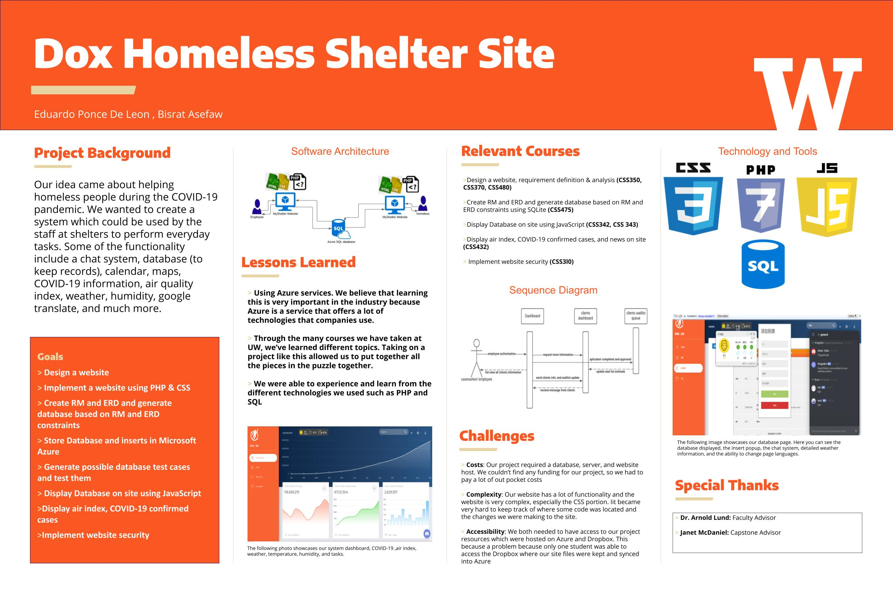

Division of Computing & Software Systems
March 19, 2021
Bisrat Asefaw & Eduardo Padilla Ponce Deleon
Dex Homeless Shelter Site
Group Project - Student Defined
Advisor: Dr. Arnold Lund
Abstract

View full-sized poster